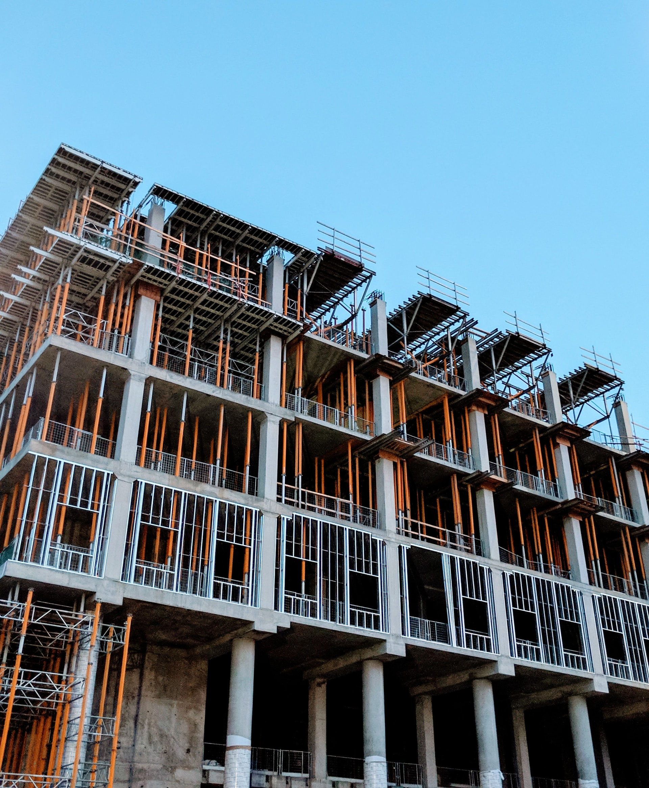
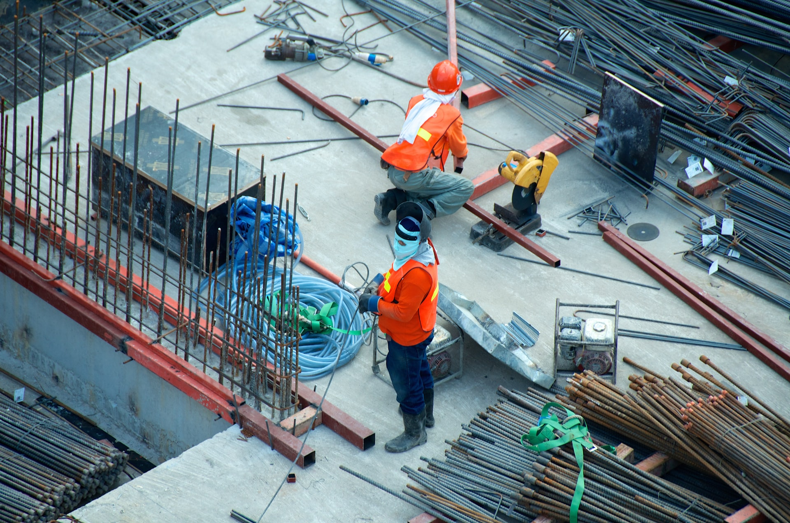
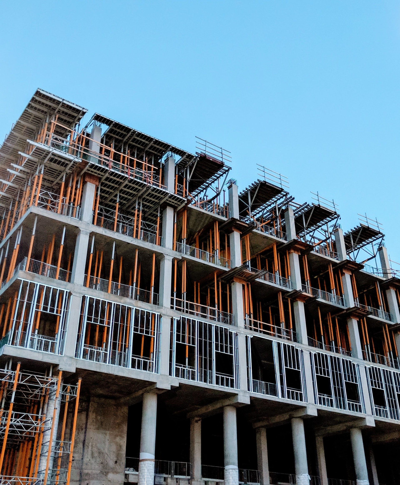
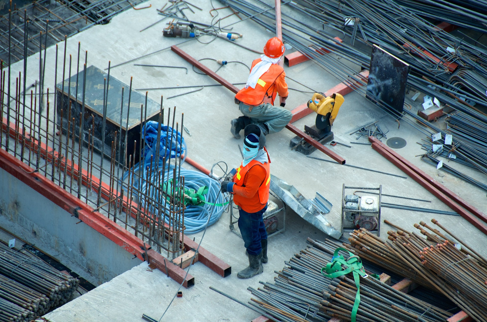

Nuestros servicios

1Construcciones desde Cero
A la hora de construir una vivienda desde cero, tenemos que tener en cuenta una serie de pasos a seguir, ya que no todo es la estética de dicha vivienda. La realidad es que influyen una gran cantidad de factores. Lo primero que debemos tener en cuenta es la localización y la estructura (esqueleto) de nuestra vivienda..
2Reparaciones
Debemos chequear constantemente las vías internas que fluyen a través de las paredes que nos rodean. Las tuberías, conexiones eléctricas y esqueleto central deben ser chequeados anualmente. De esta manera podemos diagnosticar a tiempo cualquier falla. Así tendrás mayor tiempo de maniobra en lo que se gestiona el plan de acción..
3Restauraciones
Es modificar la estructura de algo para mejorarlo, un piso enmohecido o un techo con tijerales inseguros requieren de restauración, y una sala que se convertirá en comedor y necesita mayor luz requiere de una remodelación.Como ves, hay una diferencia entre remodelación arquitectónica y restauración..
Galeria
 





Expertos en:
Gestión de Proyectos